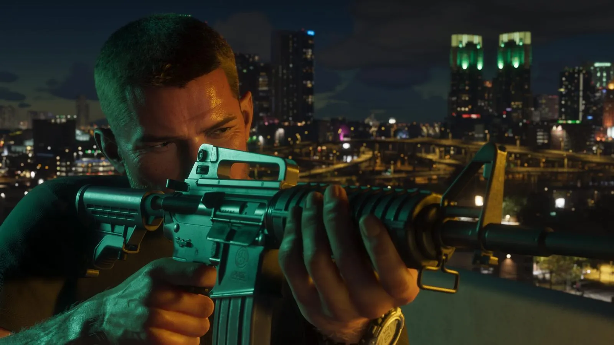
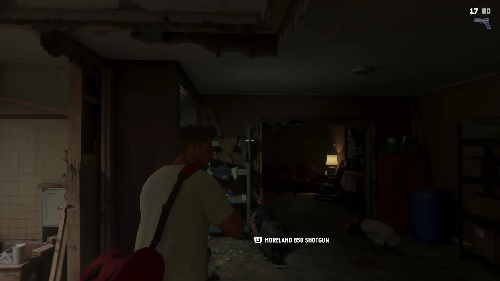

Оружие в GTA 6: все пушки из трейлеров и скриншотов
Опубликовано:

- Rockstar показала 7 моделей с названиями: пистолеты Klose K17, Girardi ES9, Nipper .38, револьверы Morgan и Mustang .357, автомат Duke 556, дробовик Moreland 850.
- Ещё около десятка стволов видно в трейлерах без названий: пистолет-пулемёт, пулемёт, снайперские винтовки, двустволка.
- Полный список Rockstar не публиковала — обновим страницу после 19 ноября.
Коротко
Официального списка оружия GTA 6 нет — Rockstar его не публиковала. Всё, что известно, собрано по официальным трейлерам, скриншотам, артам и описанию Ultimate Edition. Как и в прошлых играх серии, у стволов вымышленные названия, а внешне они повторяют реальные модели. На 16 ноября 2026 года у семи стволов есть точные названия, остальные видны только в кадре.
7 моделей с названиями
| Название | Тип | На что похоже | Где показали |
|---|---|---|---|
| Moreland 850 | дробовик | Remington 870 | «Расширенный показ», 04:26 — надпись Moreland 850 Shotgun на экране |
| Duke 556 | автомат (карабин) | M4 / AR-15 | «Расширенный показ» |
| Klose K17 | пистолет | Glock 17 | Ultimate Edition — именная версия Лусии |
| Girardi ES9 | пистолет | Beretta 92FS | Ultimate Edition — именная версия Джейсона |
| Nipper .38 | компактный пистолет | Bersa Firestorm 380 | официальный арт — у Лусии в руках |
| Morgan (Hawk & Little) | револьвер | Smith & Wesson 629 | Ultimate Edition — пара револьверов |
| Mustang .357 | револьвер | Colt Python | официальный скриншот |
Столбец «На что похоже» — это сравнение, которое сделали игроки и издания, а не заявление Rockstar. По данным базы IMFDB, на затворе Nipper .38 написано, что пистолет сделан в Бразилии, а на Mustang .357 за барабаном стоит логотип Duke — там, где у настоящего Colt Python эмблема Colt.

Duke Arms — знакомая марка: оружейная компания с таким названием была ещё в Red Dead Redemption. Moreland 850 отсылает к самому известному помповому дробовику США — Remington 870. Револьверы Hawk & Little Morgan из Ultimate Edition, по описанию Rockstar, появятся в оружейном магазине Ammu-Nation по ходу сюжета.
Что видно без названий
Ещё около десятка стволов мелькают в трейлерах и на скриншотах, но названий у них пока нет. Список — по разбору PC Gamer:
| Что в кадре | Похоже на | Где |
|---|---|---|
| Пистолет | Colt M1911 | Трейлер 1: у Джейсона в конце ограбления магазина; на скриншоте — у Рауля Баутисты |
| Пистолет-пулемёт | MP5 | Трейлер 2: ограбление банка, у Джейсона и Лусии; у Джейсона — с коллиматором |
| Пистолет-пулемёт | MAC-10 | Арт с Джейсоном — с раскраской Vintage Vice City |
| Пистолеты-пулемёты | Uzi | Трейлер 2: стойки в магазине Ammu-Nation Фила |
| Автомат | АК-47 | Трейлер 2: стойки в Ammu-Nation Фила |
| Ручной пулемёт | M249 | Трейлер 2: его берёт в руки хозяин Ammu-Nation |
| Дробовик | Benelli M4 | Трейлер 2: Ammu-Nation Фила |
| Двустволка | — | Скриншот: охотник целится в аллигатора |
| Снайперская винтовка Duke | — | Скриншот: охотник, винтовка с планками |
| Винтовка со скользящим затвором | Remington 700 | Скриншот: один из двух охотников |
| Снайперская винтовка | M1A | Скриншот: браконьеры |
Ближний бой и метательное
По разбору PC Gamer, в кадрах уже есть молоток, бейсбольная бита, коктейль Молотова и гранатомёт. В «Расширенном показе» Лусия бьёт мужчину туфлей на шпильке — но, скорее всего, это только ролик, а не оружие, которое можно взять.
Раскраски и именные стволы
| Что | Откуда | Как получить |
|---|---|---|
| Раскраска оружия Vintage Vice City | бонус за покупку | купить игру до 20 ноября 2026 года |
| Именные Girardi ES9 (Джейсон) и Klose K17 (Лусия) | Ultimate Edition | открываются по ходу сюжета |
| Револьверы Hawk & Little Morgan | Ultimate Edition | появятся в Ammu-Nation по ходу сюжета |
| Тропическая раскраска с пальмами | Ultimate Edition | для большинства оружия |
Подробнее о том, что входит в каждое издание, — в статье Издания и цены GTA 6: Standard, Ultimate и бонус предзаказа — что входит и стоит ли переплачивать.
Как работает оружие
- Оружие видят. Полиция запоминает приметы, в том числе оружие. Дробовик в руках привлекает больше внимания, чем дробовик за спиной.
- Оружие можно выбросить, чтобы сбросить приметы, — вместе со сменой одежды и машины.
- Два ствола переключаются без колеса, а оружие с пола подбирается прямо в бою (Engadget).
- Арсенал возят в багажнике. Свою машину можно вызвать через приложение Scooter Bros — в ней хранятся купленное оружие и запасная одежда.
Все механики — в статье Новые механики GTA 6: что изменилось и в карточке справочника «Стрельба».
Что добавим после релиза
- Полный список оружия с характеристиками.
- Цены в Ammu-Nation и где взять каждый ствол бесплатно.
- Модификации: прицелы, глушители, магазины.
- Лучшее оружие для ограблений и погонь — по опыту игроков.
- Ammu-Nation есть почти во всех GTA, начиная с GTA 3 — и в GTA 6 магазин тоже на месте.
- Флорида с 1 июля 2023 года разрешила носить скрытое оружие без лицензии — отсюда тиры и оружейные на каждом шагу и в Леониде.
Частые вопросы
Какое оружие есть в GTA 6?
С названиями известны 7 стволов: Moreland 850, Duke 556, Klose K17, Girardi ES9, Nipper .38, Morgan и Mustang .357. Ещё около десятка видно в трейлерах без названий.
Есть ли в GTA 6 Ammu-Nation?
Да: магазин Фила виден во втором трейлере, а револьверы Hawk & Little Morgan из Ultimate Edition появятся в Ammu-Nation.
Есть ли в GTA 6 колесо оружия?
По превью Engadget, два ствола переключаются без колеса. Полностью систему покажут после релиза.
Сколько оружия в GTA 6?
Rockstar не называла. Полный список появится после 19 ноября.
Источники: Rockstar Games: «Расширенный показ» (27.08.2026), описание Ultimate Edition и Vintage Vice City Pack; PC Gamer, «GTA 6 weapons list», обновлено 28.10.2026; RankedBoost, «GTA 6 Weapons», 20.09.2026; IMFDB, «GTA 6»; games.gg, 27.06.2026; Engadget.
Каждый день — новости, фишки и секреты GTA 6 за 30 секунд. Подписывайтесь:
YouTubeInstagramTikTok